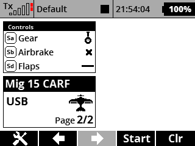

If you use to forget wath each swich is used for in each model, this app may help
Install the app. It will appear on the user application Menu.
You can set 2 sizes of dash panel, small (only 1 indicator) or double (3 indicators).
Adjust the name, swicth and type of indicator, and remember to press "Save" when all changes made.
Finally, goto "Timer/sensors"->"Displayed Telemetry", press "Add" , choose "Lua" and select the dashboard.